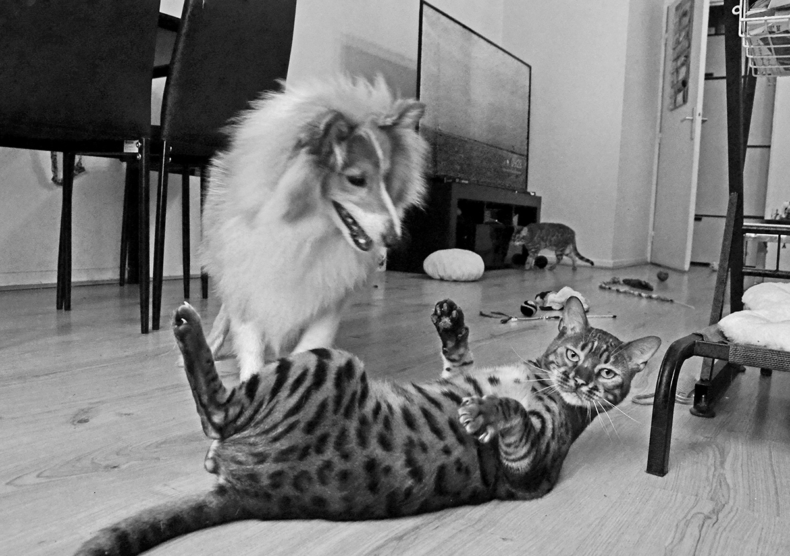

Salut les humains.
Moi c’est Vostok. Berger des Shetland, modèle mâle, pure élégance. Je vis dans une coloc un peu bizarre, avec deux humains (Yuliana et Rudy), et… deux chats. Oui, deux. On va y revenir.
Ce site, c’est mon espace à moi. Officiellement tenu par mes humains, parce que je n’ai pas de clavier compatible avec mes pattes. J’aurais bien tenu ce site moi-même, mais bizarrement, aucun fabricant de clavier ne pense à adapter leurs touches aux pattes élégantes des chiens. Même les smartphones, c’est 100 % humano-centrique. La technologie me déçoit.
J’ai aussi testé leur téléphone, mais il refuse de scanner mes truffes ou de reconnaître mes aboiements comme commandes vocales.
Bref, c’est un monde pensé pour les humains. Triste époque.
Et je vous vois venir : "Mais Vostok, tu pourrais dicter à tes humains ce que tu veux dire!"
Ahah. Oui. J’ai essayé. Mais leur langage est si limité… Comment leur faire comprendre la complexité émotionnelle d’un pipi territorial sur le buisson préféré de la teckel du quartier ? Ou l’intensité mystique d’un pet laissé par un dogue allemand sur notre banc de parc? Ou l’avertissement territorial d’un staffie vénère (mais respecté)? C’est trop profond pour eux.
Mais malgré leur lenteur intellectuelle, je les aime. (Après la nourriture, bien sûr.)
Maintenant, parlons des squatteurs poilus :
– Jango, jeune bengal de 1 an et demi, surnommé affectueusement *Tupoy*. Il met des sacs sur la tête et se prend pour un fantôme. On joue parfois ensemble. Il est un peu lent du bulbe, mais fun.
– Lassya, 10 ans, alias *Skatina*, la princesse intouchable. Elle a une voix d’opéra et une humeur de drag-queen sous caféine. Elle me déteste. Je le lui rends bien.
Le pire ? Mes hùmans les caressent. Et osent dire : "Quel bon chat ! Quelle jolie minette !"
NON.
Pas. Devant. Moi.
Je rapplique aussitôt, gueule au vent, pour rétablir l’ordre moral. Moi seul mérite les compliments, les câlins, et les biscuits.
Donc voilà. Ce site, c’est ma version officielle de la vie.
Les chats n’ont qu’à faire leur propre blog.
